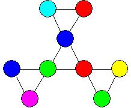
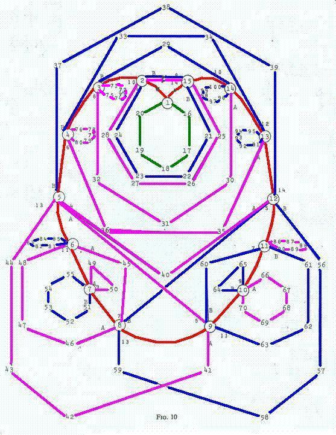

The above applet was improved by colleague, Emil Iacob and Georgia Southern students. It has a [R] Rotate Clockwise, [r] Rotate Counterclockwise, [P] Pinch Flex, [V] V-flex and an [U] Upside Down button to help back up. UPU undoes a P while URVUR undoes a V. I finished this version during December 2009. Other contributors in addition to Emil were students John Nelson and Chasen Smith. To proceed through the Tuckerman Traverse using only the pinch flex, continue to pinch until you see singletons. They will be denoted by a black mark on a white background. Rotate once before the next pinch and you will see the singletons again. Rotate in the same direction and pinch again. Once the singletons vanish, return to pinches without rotating. Summarizing, P P R P R P P P R P R P P P R P R P P P should produce the Tuckerman Pinch Traverse. |
| In this section we will not be doing any Pinches, just V's. One interesting pattern is the red cardioid on the McLean Traverse shown below in the first Figure 10 and executed in the applet as RV and then RRV repeated 14 more times. After the first RV, you will see where the pat of degree one is located by a black mark on a white background. Rotate that singleton to the red mark to stay on the red cardioid. To follow a purple path, rotate the singleton to the purple mark before the V-flex. Once you are on the purple path you must line the 2 singletons up on the blue and the purple marks until you return to the red cardioid. Similarly, leave the red cardioid on a blue path by moving the singleton to the blue mark and stay on the blue path the same way you stayed on the purple path. |
The reason this paper is here is because Alan Moluf and Bob Verrey
found the following sequence in 1965 and I refused to give up until I could replicate it. RV and
then 5 RRV. Move to the purple triangle in the traverse
and back to the cardioid with RRRV
V and V . Then move down the cardioid with a rV. Finish the cardioid with 8 RRV's. What do
you see? A perfect hexahexaflexagon but the colors alternate in color. The back side colors are now on the front.
|
| Directions for building the trihexaflexagon and the hexahexaflexagon.
Send an e-mail to bmclean at georgiasouthern dot edu for reprints of some of the following.
Directions for the V-Flex can be found in T. Bruce McLean, "V-Flexing the Hexahexaflexagon," The American Mathematical Monthly, 86, pp. 457-466, 1979 and is available at JSTOR.com. Directions for building the nonahexaflexagon are in T. B. McLean and Emily E. Mclean, "The Nonahexaflexagon," Journal of Recreational Mathematics, 32, pp. 50-61, 2003-2004. |
| Directions for building the dodecahexaflexagon are in Thomas Anderson, T. Bruce McLean,
Homeira Pajoohesh, and Chasen Smith, "The Combinatorics of all
Regular Flexagons", European Journal of Combinatorics, 31 (2010), pp. 72-80. The last paper can be viewed and/or purchased at Science Direct.com and contains the Tuckerman Traverse which may be viewed with out purchasing the paper. Just click the tab that says 'Figures/Tables' and view Figure 6. Three of the faces, 1, 4,and 6 occur 3 different times, making it possible for the drawings on those faces to appear three completely different ways. If we turned the flexagon upside down we would see the same three faces in the opposite direction . In the spirit of the Oakley Wisner paper, we never turn the flexagon upside down in our paper. If you would prefer, the number of faces on the back is the same but they do look differently, so just double our results. |
| The "Combinatorics of all Regular Flexagons" began at Georgia Southern University in 2006. The enormity of the computer solution for the nine face flexagon indicated that the 12 face flexagon solution may exceed the computer's capacity. Thus we embarked upon a general solution to the Thomas Anderson pat sequence (Homeira proves theorem 2, but Thomas knew this sequence better than anyone else). The next to the last applet in the table below is based upon theorem 2. Then we began an algebraic approach to count the mathematical faces of order 3n for all n. The paper is now finished and the new applet at the bottom of the first table counts the mathematical faces for n = 1 through n = 4. What is missing is the traverse, similar to the McLean Traverse in the 1979 paper. |
|
|
 | The cardioid is in red and is traversed counter clockwise when you place the lone singleton in pat 4 before each V. There are another 92 faces that you can find by pinch flexing twice from the above faces. After translations are included, the count goes to 3420 mathematical faces. |
| For the nonahexaflexagon there are 100,698 initial faces. Translations put the total number of mathematical faces at 2,718,576. Justification for these results are available at Science Direct and in the above applet. | ||
| In order to build the nonahexaflexagon, you will need to start with a roll of paper tape. Start by folding an equilateral triangle at the beginning of the tape and then reproducing it until you have twenty-seven triangles. | ||
Label the triangles as in Figure 10 and make sure you start from the front side. To wind the
pat 1,4523:
|
||
| Next place 7 over 6, 9 under 8, and 8 under 7 to get Figure 12. | ||
| The above winding of 5 + 4 is now repeated twice, adding 9 to each of the instructions the first time and nine more the last time. Place 12 over 11, 14 under 13, 13 under 12, and 12 under 10 producing Figure 13. | ||
| Next 16 over 15, 18 under 17, 17 under 16 yields Figure 14. | ||
| Continuing, 21 over 20, 23 under 22, 22 under 21, and 21 under 19 looks like Figure 15. | ||
|
||
| Note that the blue 1 on the orange triangle is hidden by the blue 25 on the purple triangle. Finish up the folding by twisting 25 over 24, 27 under 26, and 26 under 25 (See Figure 16). The last step in the construction is applying one piece of tape to the common edge of 27 and triangle 1 that is touching it. This is a little cumbersome because 27 is hidden between triangles 25 and 26. The Tuckerman Traverse, rediscovered by Emily McLean in 2002, is shown below in Fig. 17 and you have just constructed the orange face that is more centered in the Tuckerman Traverse. | ||